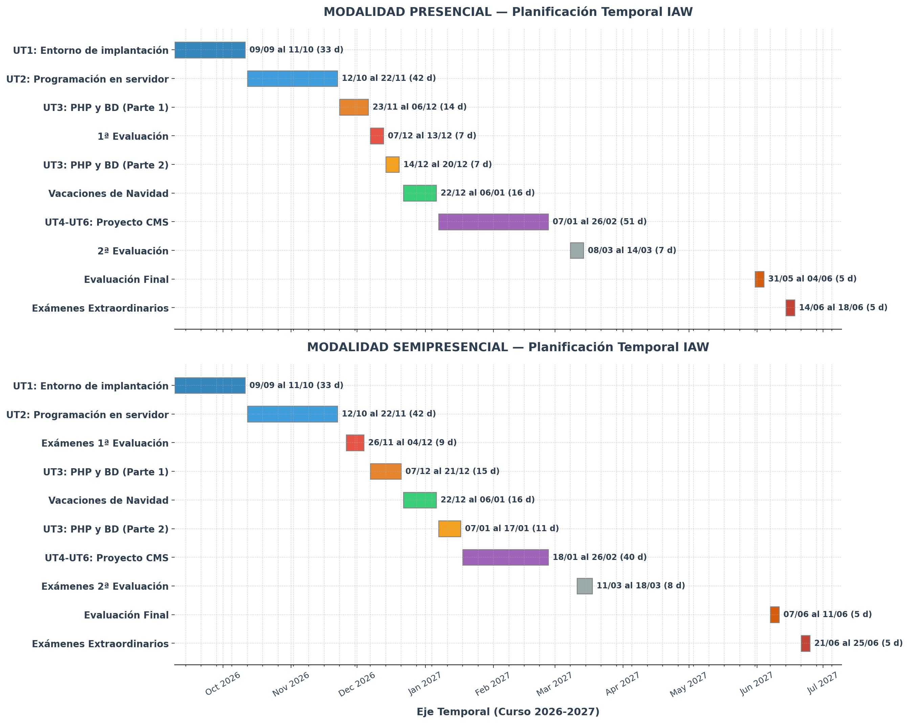

Planificación del módulo y calendario de trabajo¶
Este documento resume el ritmo de trabajo del módulo para que tengas claro:
- cuántas semanas dedicaremos a cada unidad;
- qué tutorías colectivas hay previstas en semipresencial;
- qué debes entregar cada domingo;
- cómo se organiza el proyecto de CMS de UT4, UT5 y UT6.
1. Vista general del curso¶
A continuación se muestra una planificación temporales de las Unidades de Trabajo y las evaluaciones a lo largo del curso. Esta planificación queda sujeta a posibles modificaciones.

2. Reglas de trabajo durante el curso¶
- La fecha ordinaria de entrega será siempre el domingo por la noche.
- No habrá entregas entre el 22 de diciembre y el 6 de enero.
- Las entregas se harán en tu repositorio privado del módulo.
- Los ejercicios de teoría se entregan actualizando
unidades/UTX/ejercicios.md. - Los puntos de control de prácticas se entregan actualizando la carpeta de la práctica correspondiente.
- Para cada bloque de trabajo se recomienda usar una rama propia y mantener una Pull Request abierta hasta cerrar ese bloque.
- Si una práctica continúa varias semanas, debes reutilizar la misma rama y la misma Pull Request; no abras una rama nueva cada domingo.
3. Cómo entregar cada tipo de bloque¶
Ejercicios de teoría¶
Cuando la entrega sea de ejercicios, actualiza:
unidades/UT1/ejercicios.mdunidades/UT2/ejercicios.mdunidades/UT3/ejercicios.md
Rama orientativa:
En ese archivo debes dejar, como mínimo:
- respuestas o explicaciones de los ejercicios pedidos;
- comandos, pruebas o fragmentos de código usados cuando proceda;
- comprobaciones realizadas;
- dificultades encontradas;
- uso de IA, si la ha habido.
Punto de control de práctica¶
Cuando la entrega sea un punto de control o una práctica final, actualiza la carpeta del proyecto correspondiente.
Ramas orientativas:
ut1-practica-entorno-web
ut2-practica-1-presupuesto
ut2-practica-2-login-sesion
ut3-practica-agenda
ut3-practica-incidencias
ut4-6-proyecto-cms
En una entrega de práctica debe quedar claro:
- qué parte del proyecto funciona ya;
- qué archivos has creado o modificado;
- cómo se comprueba;
- qué parte te falta todavía, si es un punto de control y no la entrega final.
4. Tutorías colectivas del grupo semipresencial¶
La idea general es hacer una tutoría colectiva cada dos semanas, normalmente los lunes de 15:00 a 16:00. Algunas podrán cambiar de formato o sustituirse por un video del profesor si el calendario lo exige.
| Fecha | Formato previsto | Foco de la sesión | Qué conviene traer preparado |
|---|---|---|---|
| 14/09 | Online | Arranque del módulo y de UT1 | Haber leído la guía de entregas si ya estás matriculado y, si puedes, tener creada la cuenta de GitHub y el entorno de trabajo. |
| 28/09 | Online | UT1 práctica 2: Docker Compose, servicios, puertos, volúmenes y logs | Haber avanzado la práctica 1 y haber intentado montar el entorno de la practica 2. |
| 12/10 | Online | Arranque de UT2: qué hace PHP en servidor, primer ejemplo y explicación de la práctica 1 | Haber mirado la teoría de la UT2. |
| 26/10 | Online | UT2 práctica 1: validación en servidor, funciones y errores típicos | Haber entregado o intentado entregar el punto de control de la práctica 1. |
| 09/11 | Online | UT2 práctica 2: login, sesion, panel privado y aislamiento por usuario | Haber leído la parte de cookies, sesiones y autenticación básica. |
| 23/11 | Online | Posible tutoría resolución dudas | Dudas concretas antes del examen. |
| 10/12 | Online | Arranque de UT3: PDO, DSN, SQLite, MariaDB y explicación de la práctica 1 | Haber mirado las primeras secciones de apuntes de la UT3. |
| 07/01 | Online | UT3 práctica 2: paso de SQLite a MariaDB/MySQL, usuario de aplicación y consultas preparadas | Haber terminado la práctica 1 de UT3. |
| 18/01 | Online | Presentación del proyecto común de UT4, UT5 y UT6 y formación de parejas | Haber revisado la UT4 cuando se publique. |
| 01/02 | Online | Punto de control 1 del proyecto CMS | Haber avanzado el despliegue e implantación inicial del CMS en pareja. |
| 15/02 | Online | Punto de control 2 del proyecto CMS y preparación de la entrega final | Haber avanzado administración, seguridad básica y modificaciones del CMS. |
5. Entregas de UT1 a UT3¶
UT1¶
| Fecha | Tipo | Rama orientativa | Ruta principal | Qué debes entregar exactamente |
|---|---|---|---|---|
| 20/09 | Ejercicios iniciales de UT1 | ut1-ejercicios |
unidades/UT1/ejercicios.md |
Primera entrega del curso. Debe incluir la creación o regularización de tu repositorio privado del módulo, la invitación al profesor como colaborador, la estructura base del repositorio y los ejercicios iniciales de UT1 sobre qué es una aplicación web, diferencia entre estático y dinámico, componentes de una aplicación web y nociones básicas de HTTP. Si todavía no habías podido arrancar por matrícula tardía, esta entrega sirve para ponerte al día. |
| 27/09 | Práctica 1 final | ut1-practica-entorno-web |
unidades/UT1/ut1-entorno-web/ |
Proyecto base de UT1 completado: estructura del proyecto, README.md, estado_entorno.txt, organización correcta de carpetas y primeros commits documentando el trabajo. |
| 04/10 | Punto de control de práctica 2 | ut1-practica-entorno-web |
unidades/UT1/ut1-entorno-web/ |
Entorno multicontenedor en progreso. Debes dejar visible al menos el esqueleto funcional de compose.yaml, php/Dockerfile, nginx/default.conf, .env.example, sql/init.sql y app/index.php, con explicación en el README.md de qué parte funciona ya y qué parte te falta. |
| 11/10 | Práctica 2 final | ut1-practica-entorno-web |
unidades/UT1/ut1-entorno-web/ |
Entorno reproducible completo y comprobable: nginx, php y db funcionando, acceso por navegador, conexión a MariaDB correcta, tabla prueba inicializada y documentación suficiente para levantar y verificar el proyecto. |
UT2¶
| Fecha | Tipo | Rama orientativa | Ruta principal | Qué debes entregar exactamente |
|---|---|---|---|---|
| 18/10 | Ejercicios iniciales de UT2 | ut2-ejercicios |
unidades/UT2/ejercicios.md |
Ejercicios de teoría y mini prácticas de UT2 relacionados con cliente y servidor, primer contacto con PHP, variables, arrays, control de flujo, funciones y primer tratamiento de formularios. La idea es que esta entrega demuestre que ya has entrado en la unidad y no empiezas la práctica desde cero. |
| 25/10 | Punto de control de práctica 1 | ut2-practica-1-presupuesto |
unidades/UT2/practica-1/ |
Formulario de presupuesto en progreso. Debe verse ya el formulario, el envío por POST, una primera validación en servidor y alguna separación mínima de lógica, por ejemplo mediante funciones auxiliares. En el README.md deja claro qué está hecho y qué te falta para cerrar la práctica. |
| 01/11 | Práctica 1 final | ut2-practica-1-presupuesto |
unidades/UT2/practica-1/ |
Práctica 1 terminada: formulario funcional, mensajes de error claros, conservación de valores si hay errores, cálculo del presupuesto y capturas o pruebas de un caso correcto y un caso erróneo. |
| 08/11 | Ejercicios de sesiones y autenticación | ut2-ejercicios |
unidades/UT2/ejercicios.md |
Actualización del archivo de ejercicios con la parte de cookies, sesiones, autenticación básica, protección de rutas y aislamiento de usuarios. Debes dejar por escrito ejemplos, explicaciones y comprobaciones, no solo definiciones sueltas. |
| 15/11 | Punto de control de práctica 2 | ut2-practica-2-login-sesion |
unidades/UT2/practica-2/ |
Aplicación de login en progreso. Debe estar ya montado el acceso, el arranque de sesión, el panel privado inicial y el planteamiento de la prueba de aislamiento. Todavía no hace falta que todo esté pulido, pero si que se vea el flujo principal. |
| 22/11 | Práctica 2 final | ut2-practica-2-login-sesion |
unidades/UT2/practica-2/ |
Práctica 2 terminada: login correcto e incorrecto, panel protegido, uso de $_SESSION, logout real, prueba de aislamiento entre usuarios y documentación clara de usuarios de prueba, estructura y forma de comprobación. |
UT3¶
| Fecha | Tipo | Rama orientativa | Ruta principal | Qué debes entregar exactamente |
|---|---|---|---|---|
| 13/12 | Ejercicios iniciales de UT3 | ut3-ejercicios |
unidades/UT3/ejercicios.md |
Ejercicios de teoria y aplicación sobre SGBD, PDO, DSN, SQLite frente a MariaDB/MySQL, CRUD y seguridad básica. Debes dejar una base suficiente para que se note que has trabajado la teoría minima antes de meterte de lleno con la práctica. |
| 20/12 | Práctica 1 iniciada | ut3-practica-agenda |
unidades/UT3/practica-ut3-agenda/ |
Agenda con SQLite y PDO iniciada: conexión, tabla creada desde PHP, alta, listado, edición, borrado, validación en servidor, consultas preparadas y salida escapada. |
| 10/01 | Práctica 1 terminada | ut3-practica-agenda |
unidades/UT3/practica-ut3-agenda/ |
Agenda con SQLite y PDO terminada: conexión, tabla creada desde PHP, alta, listado, edición, borrado, validación en servidor, consultas preparadas y salida escapada. |
| 17/01 | Práctica 2 final | ut3-practica-incidencias |
unidades/UT3/practica-ut3-incidencias/ |
Proyecto con MariaDB/MySQL y PDO terminado: reutilización razonada de la lógica de UT3, usuario de aplicación, cambio de DSN, CRUD completo, filtro funcional, validación y seguridad básica. |
6. Proyecto común de UT4, UT5 y UT6¶
UT4, UT5 y UT6 se trabajarán como un único proyecto de CMS (Content Management System) por parejas.
La idea general será esta:
- en UT4 se arranca el proyecto y se implanta el CMS;
- en UT5 se continúa con configuración, administración y mantenimiento;
- en UT6 se remata con adaptaciones y modificaciones del CMS;
- no se evaluará cada practica por separado;
- se hará seguimiento mediante puntos de control y una entrega final con una demo del CMS en vídeo.
Formato general del proyecto¶
- Trabajo por parejas, salvo indicación expresa del profesor.
- Un único producto viable que irá creciendo durante las tres unidades.
- Una sola rama de trabajo recomendada para el proyecto:
ut4-6-proyecto-cms. - La ruta exacta del proyecto y de las evidencias se confirmará al publicar los materiales de la UT4.
Puntos de control y entrega final¶
| Fecha | Tipo | Qué debe verse ya |
|---|---|---|
| 31/01 | Punto de control 1 | CMS desplegado y accesible, instalación inicial completada, estructura básica del sitio, usuarios o roles iniciales, y explicación corta de qué parte del proyecto cubre la implantación de UT4. |
| 14/02 | Punto de control 2 | Proyecto avanzado con tareas de administración ya visibles: roles, actualizaciones, copia de seguridad o estrategia de backup, exportación/importación si procede, y plan de las modificaciones finales a realizar en UT6. |
| 22/02 | Entrega final | Producto final viable, documentado y funcional, junto con un vídeo donde la pareja muestre el CMS, explique las configuraciones realizadas, las tareas de administración, las modificaciones introducidas y la forma de comprobar que todo funciona. |
7. Recomendación final¶
La mejor forma de seguir bien el módulo es esta:
- Lee los apuntes de la semana y resuelve los ejercicios o el tramo de práctica correspondiente.
- Haz commits pequeños y con mensajes claros.
- Sube tus cambios antes del domingo por la noche.
- Mantén actualizada la Pull Request del bloque en el que estés trabajando.
- Llega a la tutoría colectiva con trabajo previo hecho y dudas concretas.
Este curso está planteado para trabajar de forma contínua. Si esperas a la última semana de cada unidad, llegarás mucho peor a las prácticas y a las pruebas de evaluación.